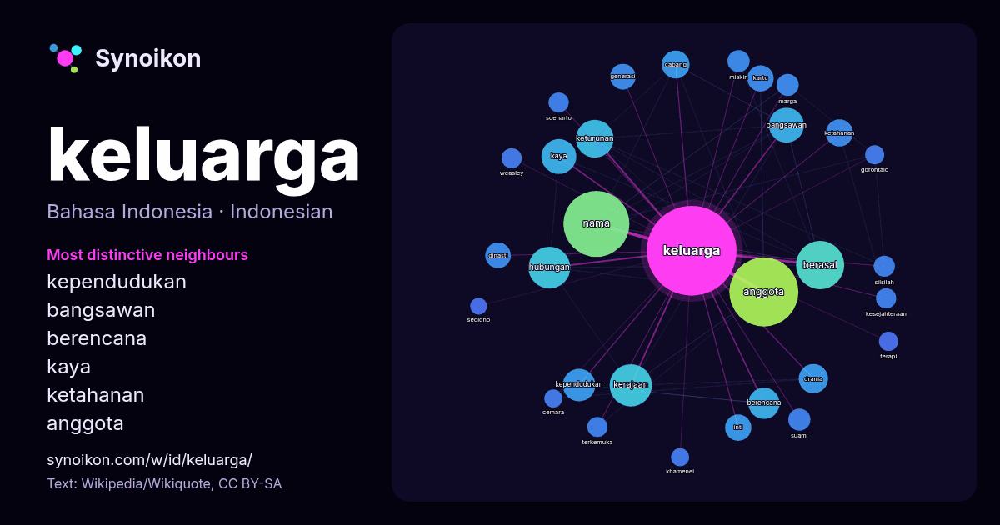

Bahasa Indonesia · kata populer
keluarga
“family” · Kata-kata di sekitarnya dalam 1565 kemunculan dari Wikipedia, Wikiquote.

Tetangga paling khas
- kependudukan 25×
- bangsawan 19×
- berencana 18×
- kaya 17×
- ketahanan 17×
- anggota 17×
- keturunan 16×
- berasal 13×
- hubungan 11×
- kartu 11×
- inti 11×
- weasley 11×
- silsilah 11×
- kerajaan 10×
- cabang 10×
- drama 10×
- dinasti 9.8×
- marga 9.6×
- khamenei 8.9×
- soeharto 8.9×
× = berapa kali lebih sering daripada di teks Wikipedia umum.
Tetangga paling sering
- anggota 117
- nama 107
- berasal 57
- indonesia 53
- memiliki 48
- kerajaan 44
- hubungan 43
- anak 42
- orang 39
- rumah 39
- kepala 36
- salah 36
- keturunan 35
- bahasa 33
- amerika 32
- bangsawan 30
- film 30
- kaya 30
- kependudukan 26
- berencana 24
Dalam konteks
- khusus, pernikahan, atau yang lainnya. Keluarga merupakan unit terkecil dari masyarakat yang terdiri atas kepala keluarga dan beberapa orang yang terkumpul Wikipedia snippets · Keluarga
- dari keluarga cabang Britania diangkat menjadi bangsawan Britania Raya atas permintaan Ratu Victoria. Selama 1800-an, pada masa puncaknya, keluarga ini Wikipedia snippets · Keluarga Rothschild
- Austen berasal dari keluarga pedagang wol yang tua dan kaya. Karena setiap generasi putra sulung menerima warisan, cabang keluarga George jatuh ke dalam Wikipedia snippets · Jane Austen
- Keluarga Soeharto adalah orang-orang yang memiliki hubungan keluarga dengan Presiden Indonesia ke-2 Soeharto seperti istri, anak, menantu dan cucu. Keluarga Wikipedia snippets · Keluarga Soeharto
- serta hubungan keluarga hasil pernikahan yang sah menurut hukum yang berlaku, seperti mertua dan besan. Selain itu, ada beberapa keluarga angkat yang terbentuk Wikipedia snippets · Keluarga Joko Widodo
- Keluarga Hary Tanoesoedibjo adalah orang-orang yang memiliki hubungan keluarga dengan pengusaha dan politikus Indonesia Hary Tanoesoedibjo, yang termasuk Wikipedia snippets · Keluarga Hary Tanoesoedibjo
- anaknya. "Keluarga sudah tahu saya bakal sibuk, jadi sudah paham. Kalau saya tidak ada di rumah, suami yang jaga anak-anak. Yang penting keluarga itu solid Wikipedia snippets · Puti Guntur Soekarno
- Keluarga politik Indonesia atau Dinasti politik Indonesia adalah kekuasaan yang secara turun temurun dilakukan dalam kelompok keluarga yang masih terikat Wikipedia snippets · Daftar keluarga politik Indonesia
Kata lainnya
- air
- anjing
- bahasa
- emas
- iklim
- jantung
- jembatan
- kebenaran
- kehidupan
- kekuasaan
- kematian
- kereta
- kerja
- kesehatan
- kesenian
- kucing
- lingkungan
- makanan
- sains
- sejarah
- tuhan
- uang
Dihitung sebelumnya pada 2026-10-09 dengan pengaturan bawaan (±5 kata, korpus sedang). Peta interaktif dapat memperbaruinya dengan data langsung.
Antarmuka diterjemahkan mesin; koreksi dipersilakan.